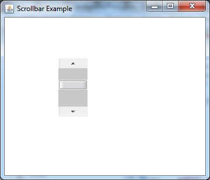
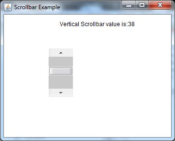

Java AWT Scrollbar
17 Mar 2025 | 4 min read
The object of Scrollbar class is used to add horizontal and vertical scrollbar. Scrollbar is a GUI component allows us to see invisible number of rows and columns.
It can be added to top-level container like Frame or a component like Panel. The Scrollbar class extends the Component class.
AWT Scrollbar Class Declaration
public class Scrollbar extends Component implements Adjustable, Accessible
Scrollbar Class Fields
The fields of java.awt.Image class are as follows:
- static int HORIZONTAL - It is a constant to indicate a horizontal scroll bar.
- static int VERTICAL - It is a constant to indicate a vertical scroll bar.
Scrollbar Class Constructors
| Sr. no. | Constructor | Description |
|---|---|---|
| 1 | Scrollbar() | Constructs a new vertical scroll bar. |
| 2 | Scrollbar(int orientation) | Constructs a new scroll bar with the specified orientation. |
| 3 | Scrollbar(int orientation, int value, int visible, int minimum, int maximum) | Constructs a new scroll bar with the specified orientation, initial value, visible amount, and minimum and maximum values. |
Where the parameters,
- orientation: specifies whether the scrollbar will be horizontal or vertical.
- value: specifies the starting position of the knob of Scrollbar on its track.
- minimum: specifies the minimum width of track on which scrollbar is moving.
- maximum: specifies the maximum width of track on which scrollbar is moving.
Method Inherited by Scrollbar
The methods of Scrollbar class are inherited by following classes:
- java.awt.Component
- java.lang.Object
Examples
Java AWT Scrollbar Example
ScrollbarExample1.java
import java.awt.*;
public class ScrollbarExample1 {
ScrollbarExample1() {
Frame f = new Frame("Scrollbar Example");
Scrollbar s = new Scrollbar();
s.setBounds(100, 100, 50, 100);
f.add(s);
f.setSize(400, 400);
f.setLayout(null);
f.setVisible(true);
}
public static void main(String args[]) {
new ScrollbarExample1();
}
}
Output:
Java AWT Scrollbar Example with AdjustmentListener
In the following example, we are creating a Scrollbar and adding it into the Frame. Here, we are using addAdjustmentListener() method of Scrollbar class which receives the instances of AdjustmentEvent and eventually we display it in the form of Label.
ScrollbarExample2.java
import java.awt.*;
import java.awt.event.*;
public class ScrollbarExample2 {
ScrollbarExample2() {
Frame f = new Frame("Scrollbar Example");
final Label label = new Label();
label.setAlignment(Label.CENTER);
label.setSize(400, 100);
final Scrollbar s = new Scrollbar();
s.setBounds(100, 100, 50, 100);
f.add(s);
f.add(label);
f.setSize(400, 400);
f.setLayout(null);
f.setVisible(true);
s.addAdjustmentListener(new AdjustmentListener() {
public void adjustmentValueChanged(AdjustmentEvent e) {
label.setText("Vertical Scrollbar value is:" + s.getValue());
}
});
}
public static void main(String args[]) {
new ScrollbarExample2();
}
}
Output:
